SOC166 · Código JavaScript detectado na URL solicitada
- Categoria
- Ataques Web
- Caso
- SOC166
- Registro
- Comprometimento não confirmado
Resumo
Requisições suspeitas do IP externo 112[.]85[.]42[.]13 ao host interno 172.16.17.17 (WebServer1002), com código JavaScript na URL. As respostas foram HTTP 302, que isoladamente não comprovam ataque. Sem evidência de sucesso nos dados analisados.
IOCs
| Tipo | Valor | Observação |
|---|---|---|
| IP | 112[.]85[.]42[.]13 | IP externo; WHOIS associado à APNIC. |
| Host | WebServer1002 / 172.16.17.17 | Destino das requisições. |
Passo a passo da investigação
1. Abertura do ticket e definição dos objetivos
O primeiro passo é abrir o ticket e definir os objetivos da investigação.
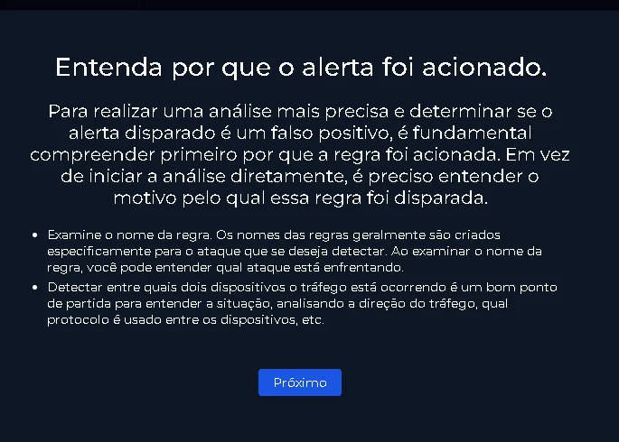
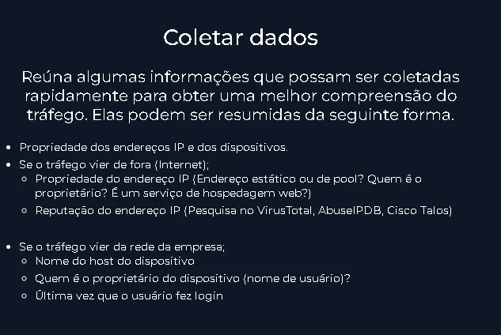
2. Busca inicial no Log Management
Em seguida, usamos o IP identificado como filtro no Log Management.
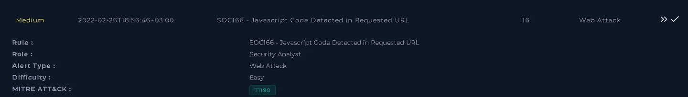
A consulta retornou oito eventos, que serão analisados para identificar os destinos e o contexto das conexões.
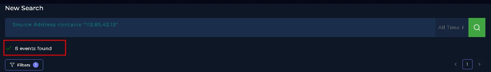
3. Correlação com o Endpoint Security
Ao analisar os eventos, identificamos o campo
destination_address e consultamos esse endereço no Endpoint
Security.
A pesquisa correlacionou o endereço ao dispositivo
WebServer1002.
4. Análise do IP externo
Voltamos ao Log Management para consultar novamente o IP externo 112[.]85[.]42[.]13
A consulta mostrou respostas HTTP 302. O código 302 Found indica um redirecionamento; por si só, não comprova atividade maliciosa. É necessário avaliar a URL de destino, a sequência de requisições e outros indicadores associados.
5. Reputação e informações de registro
Consultamos o IP no VirusTotal para verificar sua reputação.
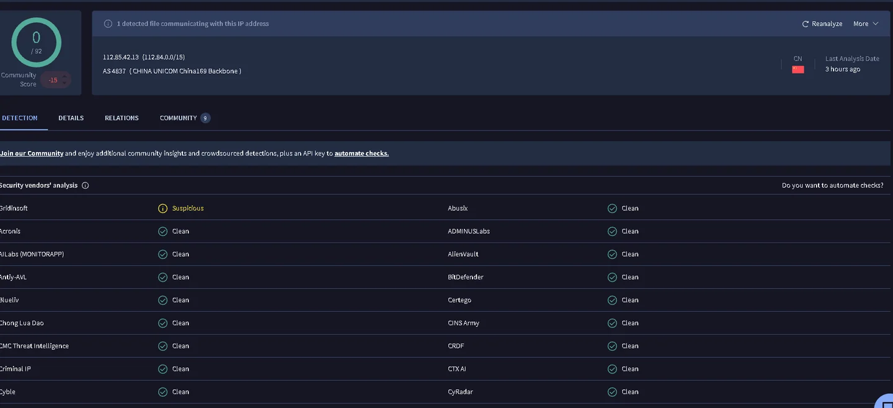
Na consulta WHOIS, o registro apontou informações associadas à APNIC, o registro regional de Internet da região Ásia-Pacífico. Isso não identifica, por si só, a organização responsável pelo tráfego.
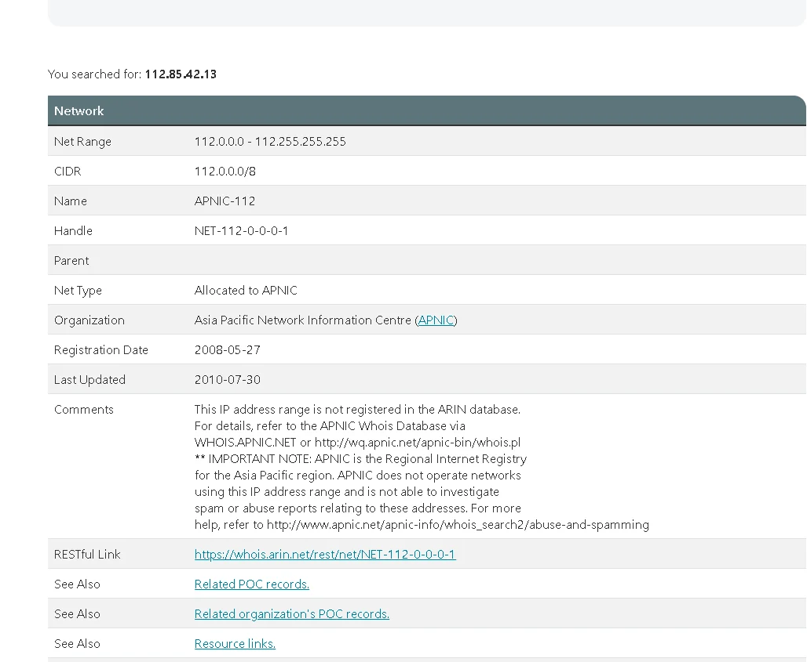
Não encontramos informações suficientes sobre o domínio nas consultas realizadas; esse dado, isoladamente, não permite concluir que ele seja malicioso.
6. Relatório e conclusão
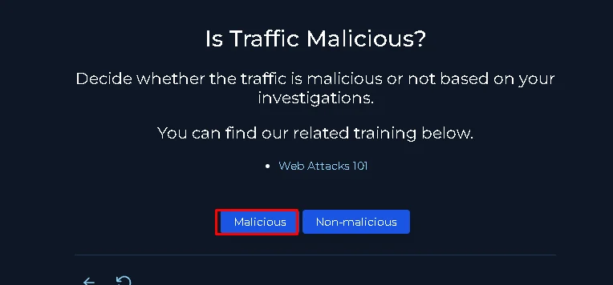
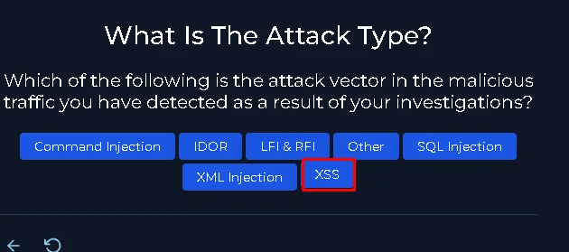
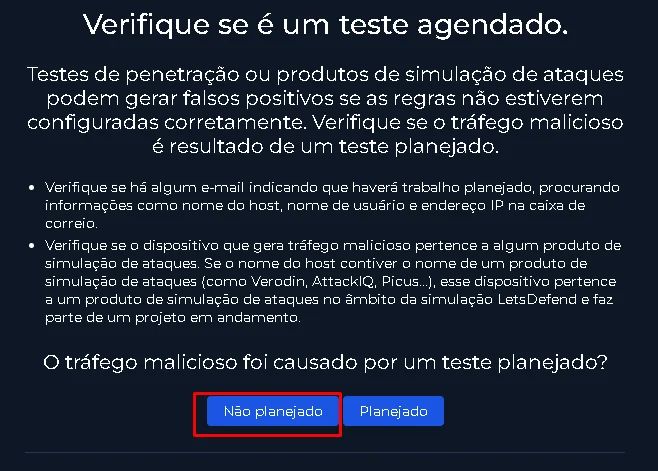
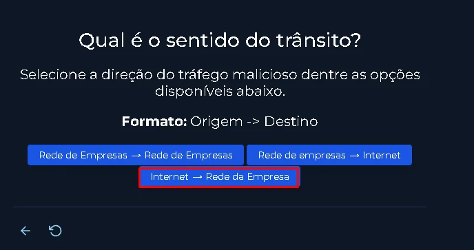
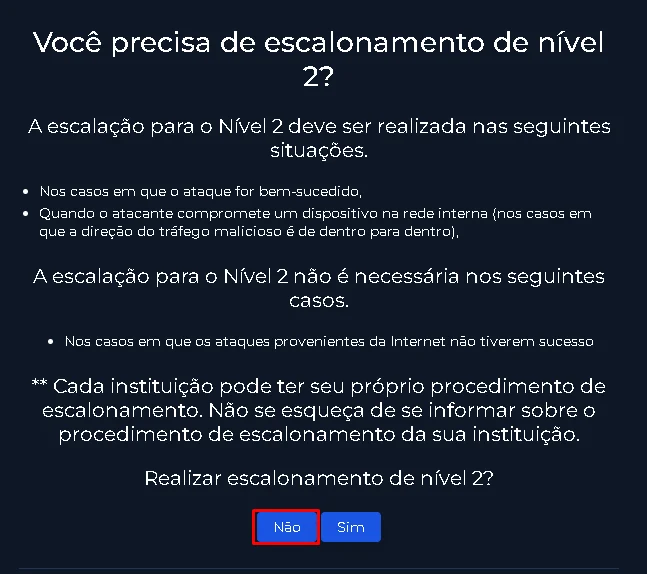
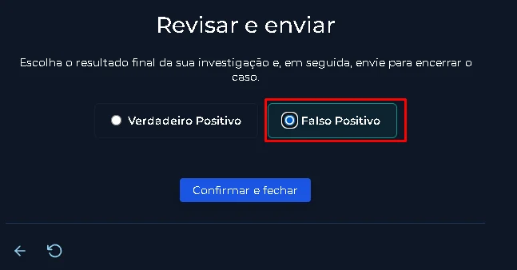
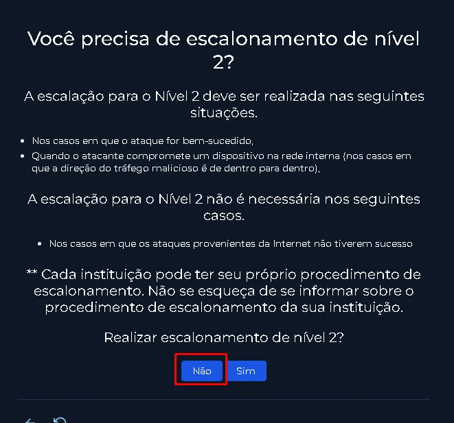
Com base nas evidências registradas, o IP
112[.]85[.]42[.]13 realizou requisições suspeitas
direcionadas ao host interno 172.16.17.17, sem evidência de
sucesso nos dados analisados. As consultas sugerem associação do IP a
uma organização localizada na China, mas essa atribuição deve ser
tratada como indicativa e validada com fontes confiáveis. O HTTP 302,
isoladamente, não confirma um ataque. Recomenda-se preservar os logs,
validar a URL de destino e revisar os alertas e a atividade observada no
WebServer1002.
Conclusão
O IP realizou requisições suspeitas ao host interno, sem evidência de sucesso. A associação à China é apenas indicativa e deve ser validada. Recomenda-se preservar os logs, validar a URL de destino e revisar a atividade no WebServer1002.
Lições aprendidas
- HTTP 302 isolado não confirma ataque.
- Dados de WHOIS e geolocalização não identificam, por si só, o responsável.
Exercício simulado. Algumas capturas foram recortadas ou tiveram campos ocultados.